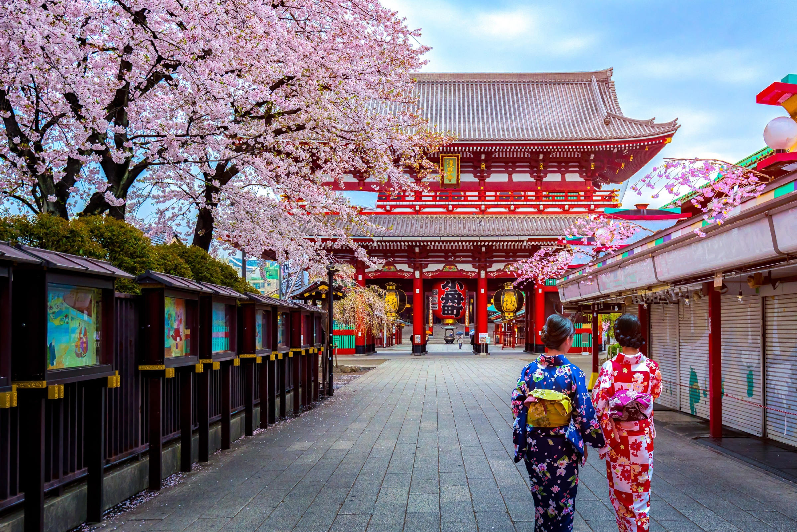
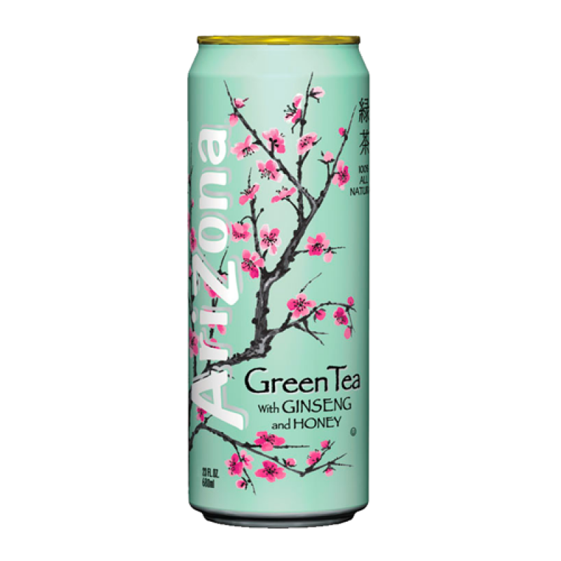

Portfolio
In the homepage, I wanted to go the aesthetic route by showcasing different colours based on the drink, Arizona Iced tea.
To fulfill this theme, I went on Google Chrome and looked at all the varieties available to purchase but since this is a Japanese themed
example, the original flavour containing the green and cherry blossom pink was perfectly matched for my ideas. The images showcase how to allign
them in a row with equal spoace between, which is beneficial for presenting.
In the coming pages, there will be different themes along with effects I have implemented on images to give more interaction such as
animation effects. I also wanted to demonstrate a dropdown navigation bar as I find that the user will have a better experience with
navigation since everything is neat and tidy.
For the "News" page I wanted to give the feel of a gloomy yet vibrant, high tech city. I leaned towards going for a fast paced place like night and
time Tokyo but for a more atmospheric feel I based it on a run down alley polluted with neon signs, the ones that
rough clubs display and street level crime takes place.
I demonstrated a hover effect on this pages image which contains information, this could be used for educational purposes
for holding bitesize information.
I decided to only link one page for the dropdown menu as one page is only needed to demonstrate how its done, the drop down colour is a white background
and when you hover over it, turns to a light grey to give it the perfect contrast.


The final two linked pages are solely to demonstrate my pallette abilities along with providing my company name and business details.
To create my contact card, I looked at different software which specialises in graphic design